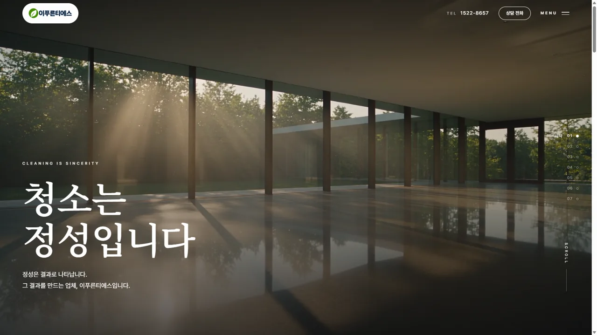
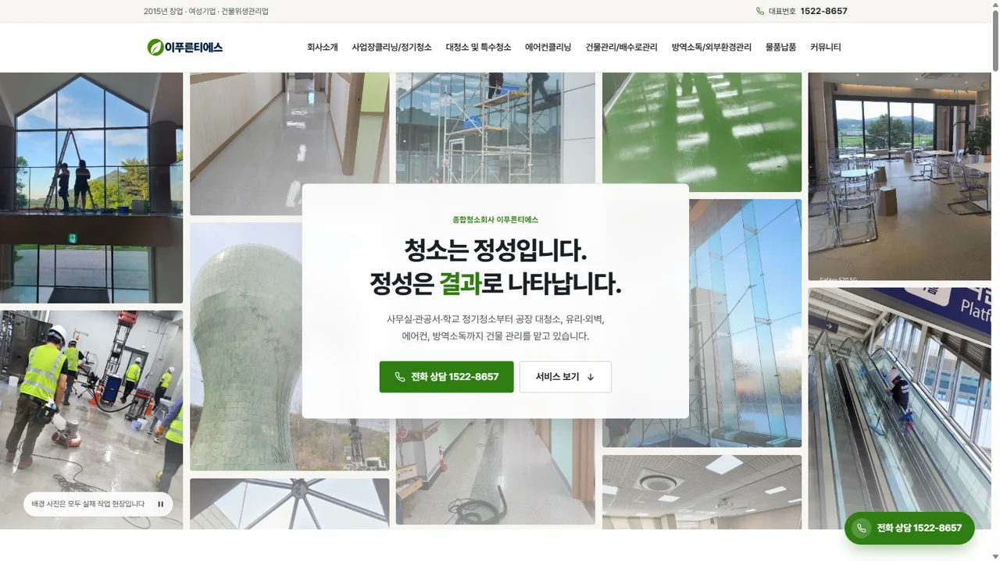
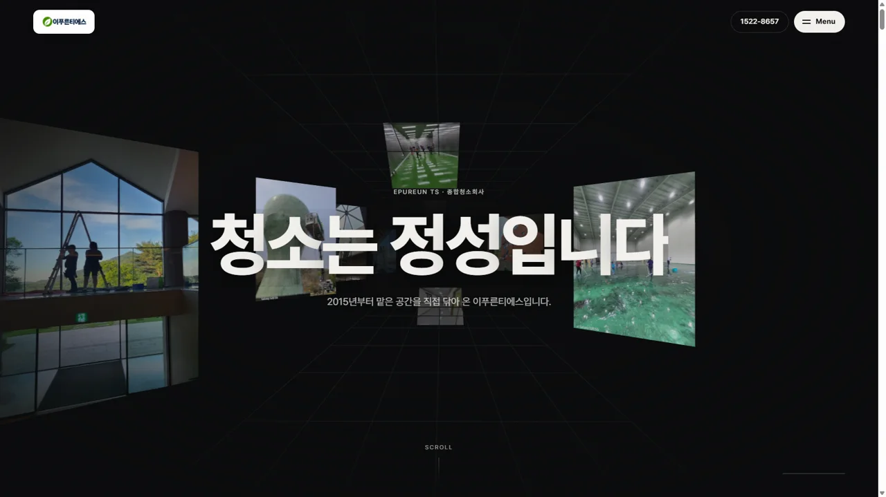

A안
시네마틱 풀스크린
한 화면에 한 장면씩, 영상과 큰 글자로 차분하게 넘어가는 구성입니다. 고급스럽고 여백이 많습니다.
- 전체 화면 영상
- 화면 단위 스크롤
- 인트로 연출
- 서비스 패널 펼침

B안
밝고 심플한 정보형
기획안의 구성을 그대로 살리되 파란색을 줄이고 정돈했습니다. 원하는 서비스를 가장 빨리 찾을 수 있습니다.
- 작업사진 모자이크
- 전체 메뉴 펼침
- 작업 전후 비교
- 현장 사진 필터

C안
다크 스크롤 스토리텔링
스크롤에 따라 현장 사진 사이를 지나가고 장면이 이어지는 구성입니다. 가장 인상이 강합니다.
- 3D 사진 터널
- 영상 프레임 스크롤
- 카드 확대 전환
- 서비스 챕터